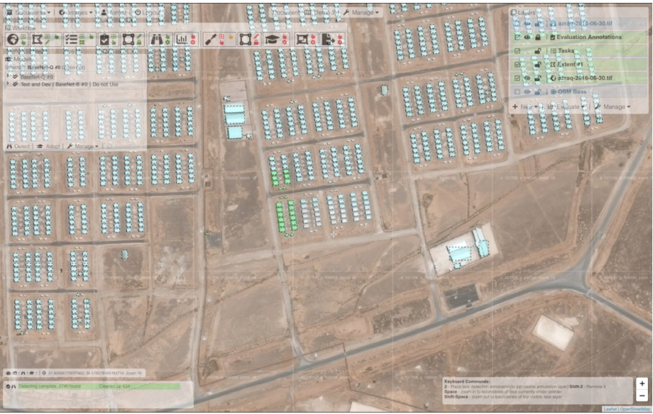
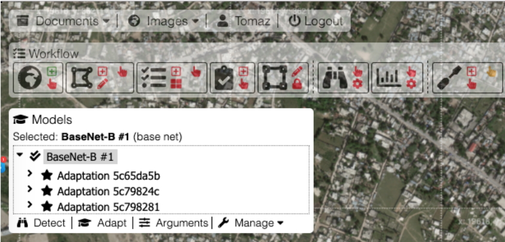

Best Practices
| Subject | [Best Practice] Mapping Refugee Settlements by using PulseSatellite |
|---|---|
| Name | Secretariat |
| Date | 2020-02-12 |
| Views | 2,722 |
 Figure 1. Refugee Camp mapping using PulseSatellite
Counting and classifying structures in a refugee settlement is a common analysis task for humanitarian agencies. In practice, this is currently manually done by human expert analysts using satellite imagery. A single settlement may have tens of thousands of structures, and identifying each of them can take several days. For camp mapping, PulseSatellite uses a Mask R-CNN model (He et al. 2017) trained on images from 12 settlements, where the image of each has been split into 300x300 pixel tiles and annotated by human experts. Once the model has been run on an unseen camp, the analyst can inspect the result in the tool and correct the outputs on a subset of tiles. An adaptation stage can then be performed to fine-tune the model to the unseen image and increase performance. In recent independent tests camp completion rates increased from 77.3% to 94.7% after adaptation, with a final user accuracy of 94.4% -in line with humanitarian performance requirements described in (Quinn et al. 2018).
 Figure2. PulseSatellite user-interface showing a hierarchy of learning models
PulseSatellite is a distributed cloud application, currently running on Amazon Web Services (AWS). The web-based user interface (UI) is written in JavaScript+HTML, and the web server, which communicates with the UI via HTTP and WS protocols, is written in NodeJS. The database is managed using PostgreSQL with PostGIS extension and is currently also used as a message streaming service for Pub/Sub messaging between the web, GPU and tiling servers. All backend files are generated and stored on a Amazon Elastic File System (EFS). Multiple GPU servers can run ML processes across a range of frameworks including PyTorch, TensorFlow and Keras. GIS processes, including the tiling servers, use OSGeo libraries and programs, most notably GDAL. All used software is open source.
* Note: The WG5 Best Practice "Mapping Refugee Settlements by using PulseSatellite" has extracted from a publication of Tomaz Logar et al. 2020.